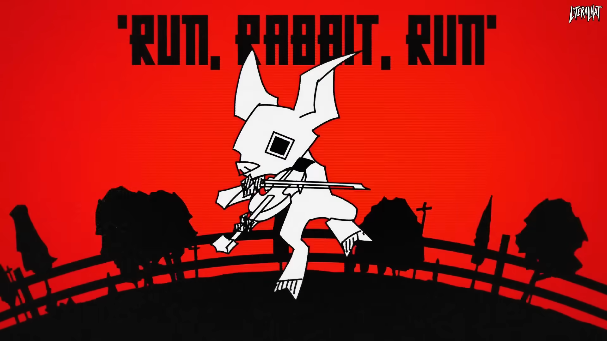

Run, Rabbit, Run
| Published On | June 22, 2022 |
|---|
An animation presenting and his antics with a cunning rabbit, animated in a triadic color scheme. Towards the end of the animation, he is eventually run down by a herd of rabbits. It is animated to the song “Run, Rabbit, Run” by Flanagan & Allen.
Video Outline
The title card begins with a hog gracefully playing the violin to the song's tune. Hat, presumably a farmer, goes on his usual hunting for rabbits for his rabbit pie. There is a sequence where he chases a certain rabbit with his farmer’s rifle, ultimately giving up trying to chase it and replacing his dish with a wolf. The rabbits eventually multiply due to the missing wolf, and showcases the numerous animals on Hat’s farm in the segment. After hearing a goat’s commotion, Hat checks on the animals and is chased down by the herd of rabbits, the initial rabbit even taking a bite on his arm. In the last scene, that rabbit sits by Hat’s rifle and top hat.
Reception
The animation garnered around 4.5 million views as of December 2024 Video Reception, with about 230K likes. This makes this video LiteralHat’s most positive and well-received video to date.